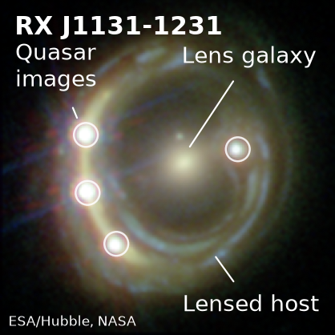

View HST imageA real gravitational lens
One quasar.
Four views of a changing disk.
In RX J1131−1231, a foreground galaxy bends the light of a distant quasar into four images. Each follows a different path, so the same intrinsic variations arrive at different times.
Stars in the lens galaxy add a different microlensing signal to each image. Separating these signals lets us study accretion disks and compact objects while measuring the time delays that probe cosmic expansion.